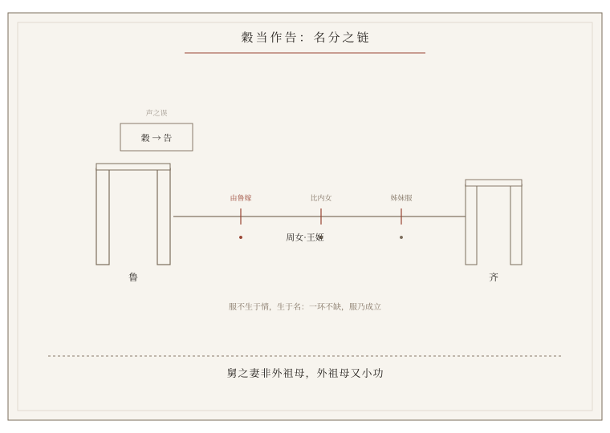

檀弓下 · 四·十 · 第 335 课
齐穀王姬之丧，鲁庄公为之大功。或曰：「由鲁嫁，故为之服姊妹之服。」或曰：「外祖母也，故为之服。」
说什么事：齐国来告王姬之丧（「穀」是「告」的声误），鲁庄公为她服大功。有人说是因她由鲁国出嫁，故比照姊妹；有人说是因她是庄公外祖母。
落在哪一层：以「名分链」量服。论「一件丧服的根据在哪」。
为何编在此位：上节论位之左，此节论服之等。位定人，服定亲；皆非由私情起。
【经】齊穀王姬之喪，魯莊公為之大功。或曰：「由魯嫁，故為之服姊妹之服。」或曰：「外祖母也，故為之服。」
【注】穀當為告，聲之誤也。王姬，周女，齊襄公之夫人。／《春秋》周女由魯嫁，卒，服之如內女服姊妹，是也。天子為之無服，嫁於王者之後乃服之。莊公，齊襄公女弟文姜之子，當為舅之妻，非外祖母也。外祖母又小功也。
【疏】此一节论诸侯为王姬著服之事。案庄二年秋，齐王姬卒，齐来告鲁。／或人解之云：「王姬，周女也。命鲁为主，由鲁嫁，比之鲁女，故为之服出嫁姊妹之服。」更有或人解云：「王姬为庄公外祖母，故为之著大功之服。」此或人之言，乃为二非也。王姬是庄公舅妻，不得为外祖母，是一非。假令为外祖母，正合小功，不服大功，是二非也。／《丧服》大功章君为姑姊妹女子子嫁於国君者，著大功之服，王姬既比之内女，故服大功也。云「天子为之无服」者，以尊卑不敌故也。若嫁於王者之后，天子以宾礼待之，则亦大功也。
齐穀 「穀」当作「告」，声相近而误。齐国来告王姬之丧。
王姬 周王之女。此王姬为齐襄公夫人。
大功 丧服五等之一，次于齐衰。
姊妹之服 为出嫁姊妹所服之服，即大功。
内女 本国之女。周女由鲁出嫁，鲁以「内女」视之。
舅之妻 庄公之父为齐襄公女弟文姜之子，故襄公于庄公为舅，王姬为舅妻。
齐国来告王姬之丧，鲁庄公为她服大功。有人说：「因为她是由鲁国出嫁的，所以为她服姊妹之服。」有人说：「因为她是外祖母，所以为她服。」
此章三层：一层是经，记庄公服大功；二层是两「或曰」，各给一个理由；三层是注，把两个理由都驳了，另立一说。
驳法极干脆：王姬是庄公舅妻，不是外祖母，一非；纵是外祖母，也只当小功，不服大功，二非。两非既去，剩下的只有「由鲁嫁，比内女」。
「比」字是全章的关键：不是亲，是比亲；不是姊妹，是比姊妹。
第一层 服不是从情生的，是从名生的 庄公与王姬，一在鲁，一在齐，非骨肉。庄公为之服，服的是什么？
服的是「鲁曾为她主婚」这一件事。周女出嫁，鲁为主；既为主，则以己女视之；既以己女视之，则以姊妹服之。
这条链极长：王姬→周女→由鲁嫁→鲁为主→比内女→姊妹之服→大功。一环不缺，服乃成立。
第二层 两个「或曰」各自错在哪 第一个「或曰」错在只说结果不说根据，看似通，其实把「比」当成了「是」。
第二个「或曰」错在把「亲」当成了唯一的根据：既认定她是外祖母，便把服等往上抬。注不客气地指出：外祖母只当小功。以亲为说而不知服等，是把情当尺。
第三层 注的驳法：先断亲，再断等 「当为舅之妻，非外祖母也」——此断亲。「外祖母又小功也」——此断等。
两层各断一次，两个或说便都立不住。礼学之辩多如此：不与争情理，只与算名分。名分一算，情自退位。
第四层 「天子为之无服，嫁于王者之后乃服之」 此句把「不可比」的一条线画出。
天子于王姬无服，非无情，是「尊卑不敌」：天子至尊，无可为服之人。若嫁于王者之后，则以宾礼待之，乃服大功。
同是一个人，服与不服，全看她嫁到哪一家。此可见周礼之服，实是一张以「位」织成的网，不是一张以「血」画成的图。
第五层 今日之用：名分先于情分 今人处理亲属、姻亲、干亲、校友、同乡之间的义务，多凭「关系好不好」。好则多担，不好则少担，遇事则争。
此节可学的是那条链：先把「我们之间是哪一层名分」算清，义务才有边界。名分不清而以情补，则每一次帮忙都成一次议价。
与今日何干 今日婚丧嫁娶、人情往来，多有为「该不该随礼、该随多少」而争执者。此节的答法是：找出那条名分链，看自己在哪一环。在链上，则服；不在链上，则礼有它属，不必以情相强。
| 左 | 右 |
|---|---|
| 齐穀 | 当作「齐告」，声之误 |
| 王姬 | 周女，齐襄公夫人 |
| 大功 | 庄公所服 |
| 由鲁嫁 | 鲁为主婚 |
| 比内女 | 以己女视之 |
| 姊妹之服 | 比亲而得服 |
| 舅之妻 | 注所断之亲 |
| 外祖母当小功 | 注所断之等 |
| 天子无服 | 尊卑不敌 |
| 嫁于王者之后 | 乃服大功 |
画两处门第并置：左侧一重门，门内一女子背影出行的轮廓（只画衣与步，不画人面），门槛上有一道横线示「主嫁」；右侧远处另一重门，尺度更小，示所嫁之国。两门之间以一道细线相连，线上有三处短刻，示名分链的三节。天空留白。赭色只用在门槛那道横线。
